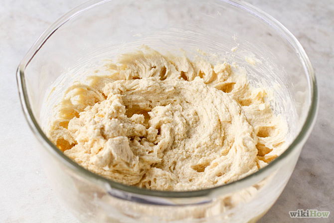
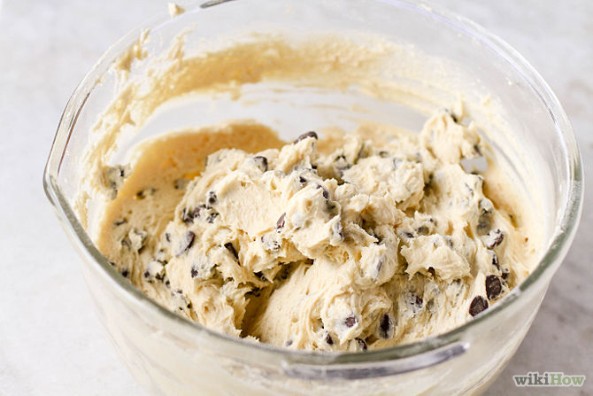

How to Make Chewy Chocolate Chip Cookies
Chocolate chip cookies are one of the best types of cookies around. If you're looking for a chewy cookies rather than crunchy ones, you will love the the cookies in this recipe. The secret to their chewiness is the brown sugar, which increases the moisture content of the cookie.
This recipe makes approximately 2 dozen medium sized cookies.
This recipe makes approximately 2 dozen medium sized cookies.
Ingredients
1 cup white sugar (201g/7.1oz)1/3 cup brown sugar (73g/2.5oz)
1/2 Tsp salt
2 Eggs
1 cup of butter (room temperature) (227g/8oz)
2 1/4 cups of flour (adapt this for elevation and humidity as needed, make sure the cups are level) (288g/10oz)
1 Tsp of Baking soda
1 Tsp of Vanilla
2 Tbs Milk
Up to 2 cups of chocolate chips (if small, less if large)
Things You'll Need
Mixing bowlMixing spoon
Anti-stick cooking spray or parchment paper (baking paper>
Baking pan (baking tray)
Fork
Wire cooling rack
Spatula
Airtight container for storage
Steps
 Preheat the oven to 350ºF/180ºC.
Preheat the oven to 350ºF/180ºC.- Add the vanilla, sugar, brown sugar, eggs, and butter.
- Use coarser sugar for thicker, chewier cookies. When sugar dissolves, it acts as a tenderizer that interferes with dough structure. This increases spreading because finer sugar dissolves more easily than coarser sugar. So if you want your cookies to remain thick and chewy, use coarse sugar (or use fine sugar for the opposite effect). If you decide to use powdered sugar for extra crispiness, make sure it doesn't have corn starch in it, or you'll get unexpected results.
- Mix these ingredients until creamy.
- Add the flour, salt, and baking soda.
- Mix until fully blended; add the milk to achieve a smoothly blended dough. After blending the mixture, add the chocolate chips.
- Apply cooking spray to the pan so that the cookies won't stick to the baking pan. Alternatively, line the pan with baking paper.
- Roll a small ball for each cookie.
- Place the cookie balls on the baking pan.
- Flatten each cookie with a fork. This will leave distinct ridges and flatten the cookie neatly.
- Put cookies in the oven for about 8-10 minutes. Don't overdo the cooking, as they'll continue to cook after you remove them from the oven.
- Take the cookies out of the oven and let them sit on a wire cooling rack for about 15 minutes to cool. Be careful not to burn yourself on the melted chips when transferring the cookies to the rack - use a spatula. The cookies are ready to eat when the chocolate chips solidify again.
- Store in an airtight container, or eat the cookies once they've cooled.
Tips
- You can add extra chocolate chips if you desire, and even mix up different kinds of chocolate chips to make your cookie better.
- You can use milk or dark chocolate chips, as preferred.
- When combining ingredients (see Step 2), mix until the butter is light and fluffy.
- If you do not like chocolate chips, use raisins or dried cherries, almonds, or blackberries. Be creative, and have fun!
Warnings
- Be careful when using the oven, especially when you are around little kids. Always supervise children who are helping with cooking.